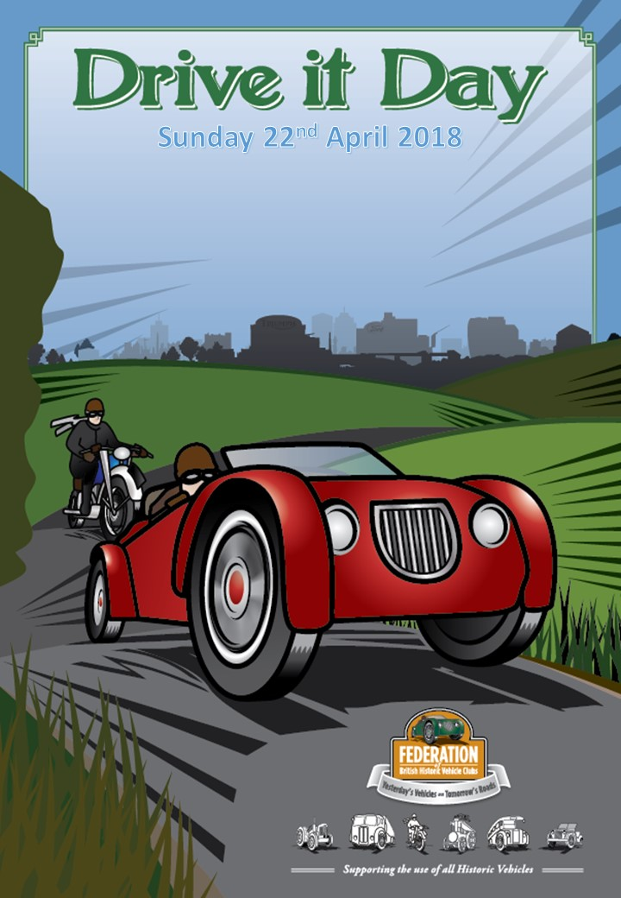

‘Drive It Day’ 2018
Annual event to take place on 22nd April
· 24th March 2018
{kind=link}
The Federation of British Historic Vehicle Clubs®’ ‘Drive It Day’ takes place every year, to help raise awareness of the size and importance of the classic vehicle movement in the UK.
The federation is a grouping of over 450 clubs and museums, together with some 1500 trade and individual supporters. Their aim is to uphold the freedom to use old vehicles on the roads without any undue restriction, and to support its member organisations.
The format for the day is a ‘tried and tested’ formula, with the many clubs that comprise the federation’s membership planning regional and local events throughout the UK. The events are as varied as the vehicles taking part, and include drive-outs, rallies and meetings at local beauty spots or historic sites. Important venues such as The National Motor Museum at Beaulieu, Brooklands, The British Motor Museum at Gaydon and Bicester Heritage are expected to be included, but there will be scores of events across the length and breadth of the country.
As member clubs are encouraged to let the federation know their plans, if you would like to arrange anything locally the easiest method is to post on the FBHVC Facebook page, or to get in touch with the FBHVC National Coordinator for Drive It Day (Ken Coad, who can be contacted by email at coadspeed@btinternet.com). Of course, please let our rally secretary know of any events you are planning, as well as Rob (web editor), so that the events can be put on the events calendar for your region.
If you want to organise a day locally, it is possible to download the poster and add your own text to advertise the event. Click the poster image to download a copy.
If you do take part in a Drive it Day activity, please let us have your photos for inclusion on the website, together with details of Mayflowers attending. Also, ‘Classic Car Weekly’ is asking for photos of your car, out and about on Drive It Day; their e-mail address for submitting photos to is ccwdriveitday@gmail.com.
Have fun,
Rob Davies and Paul Burgess